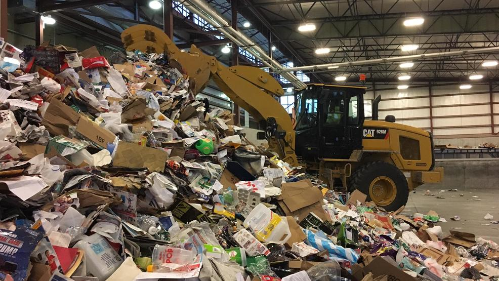

The City of Marion Sewer Department, located at 1321 South Van Buren Street, is responsible for all aspects of the wastewater collection system and wastewater treatment, The Department operates and maintains two wastewater treatment facilities, over one hundred twenty miles of sanitary sewer line, nineteen lift stations and one hundred fifty private pump stations. The Marion Wastewater Treatment Plant continues to meet and exceed the standards set forth by the State and Federal National Pollution Discharge Elimination System (NPDES} Permit as issued by the Illinois Environmental Protection Agency (IEPA}, The treatment facility has continued to maintain a high removal rate on the Biochemical Oxygen Demand (B,O.D},Suspended Solids (S,S,}, Ammonia Nitrogen Phosphorous and Fecal Coliform parameters. The City of Marion Sewer Department is currently in the process of implementing a plan to identify and take necessary steps to correct major and minor sources of sewer inflow and infiltration, These inflow and infiltration issues cause an overload in the sewer system and can raise operational costs substantially.
Linn County Solid Waste Agency
The Agency operates two locations in Linn County, Iowa, serving 17 communities and providing programming and services making recycling and reuse as convenient and easy as possible.